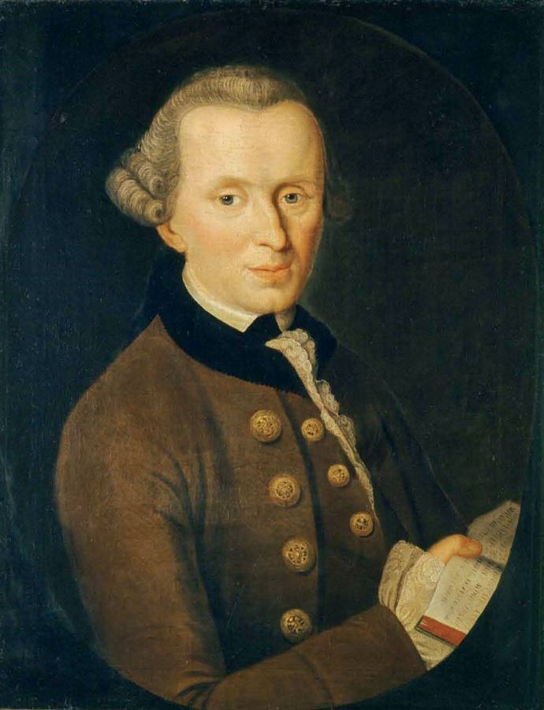

La moral y su evolución
Las costumbres y valores de cada época, y cómo han cambiado las leyes con ellos.


La moral es el conjunto de costumbres y valores que una sociedad considera buenos en cada momento. Cambia con el tiempo, y las leyes cambian con ella: lo que en una época era delito, en otra es un derecho. Aquí verás cómo ha evolucionado la moral en España a través de sus leyes.
El divorcio en España
Permitido en 1932, prohibido en 1939 y recuperado en 1981.
Leer la fichaFamiliaMatrimonio entre personas del mismo sexo
De la ley de peligrosidad social a la ley de 2005.
Leer la fichaDerechosEl voto de la mujer
Clara Campoamor y el debate de 1931.
Leer la fichaLo que antes era legal (o delito) en España
La tortura en los juicios
Se usaba para obtener confesiones hasta que las Cortes de Cádiz la abolieron en 1811.
La esclavitud
España la abolió en Puerto Rico en 1873 y en Cuba en 1886, de las últimas en Europa.
El adulterio como delito
Se castigaba con cárcel, sobre todo a las mujeres, hasta su despenalización en 1978.
La licencia marital
Hasta 1975 la mujer casada necesitaba el permiso de su marido para trabajar, abrir una cuenta o firmar un contrato.
Los anticonceptivos
Venderlos o anunciarlos fue delito hasta 1978.
La mayoría de edad a los 21
Hasta 1978 no se era mayor de edad hasta los 21 años; desde entonces, a los 18.
Más temas
La mujer en la ley: de la licencia marital a la paridad
Hace menos de cincuenta años una mujer casada no podía abrir una cuenta sin permiso de su marido. Así ha cambiado la ley.
Leer la fichaSociedad · ReligiónReligión y Estado en España
De la religión oficial a un Estado aconfesional: matrimonio, educación, impuestos y libertad religiosa.
Leer la fichaSociedad · SaludDrogas, tabaco y alcohol: cómo ha cambiado la ley
De fumar en los aviones a los espacios sin humo; del cannabis en clubes a lo que dice hoy el Código Penal.
Leer la fichaSociedad · DefensaEl servicio militar y la objeción de conciencia
La «mili» fue obligatoria para los hombres durante casi dos siglos. Así se llegó a su fin en 2001.
Leer la ficha